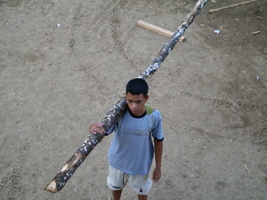
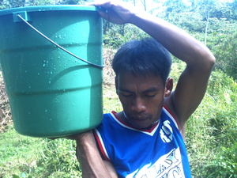
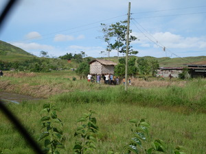

tiang   
/tiʔaŋ/
v_rt.
“carry_on_shoulder”
v.
for someone (egtiang, migtiang, intiang, agent, eg><ø-) to carry something (egtiangen, theme, eg><en-) on the shoulder
Sikeddì dè ka egtiang due su hendue te mabehat sika.
Hentew-a ka egtiang due te kayu?
Eng. carry on the shoulder
Tag. magpasán; balikátin
Ceb. pas-an
Ilo.: ?bakláyen
OCM: Burden Carrying (482)
Online dict status: -
Usage level: M
v.
(egpaniang, eg><ø-paN-) to carry lots on the shoulder
Si Peggak ka egpaniang te geèd.
Eng. carry
Online dict status: -
Usage level: M
n.
(manniang, maN-) to request everyone to carry firewood
Manniang kew pa te kayu ne igtemeg ta.
cf. talababa
Eng. measure
Online dict status: -
Usage level: M
v.
(egtitiang, eg><ø-rdpCV-) to carry something
Egtitiang sikandan te baley.
They are carrying house.
Eng. carrying
Online dict status: -
Usage level: R
Updated by: RJH,RMU,QDL,QDL
Last updated: 06/Jul/2009
"Intitiang" in text "Datu Gawilan Rebels against the Government"
This page last updated: 03-Jan-2020
Copyright © 2009-2014, Matigsalug Language Christian Association, Inc